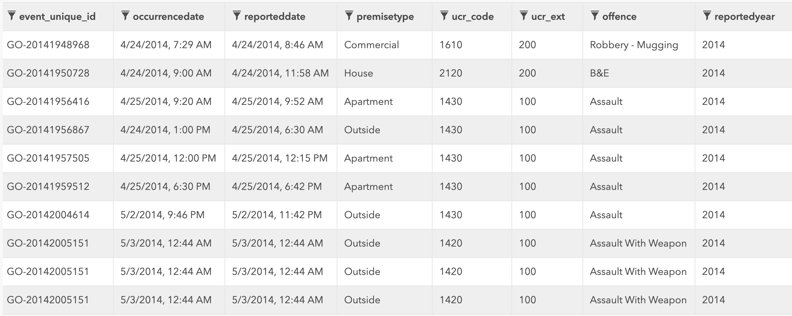
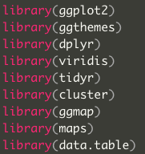
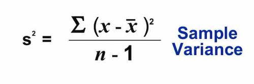

Toronto Major Crime Indicators 2014-2018
1. Introduction
Toronto Police made publicly available its data on the “Toronto Police Service Public Safety Data Portal”.
We are interested in exploring the Major Crime Indicatiors (MCI) for 2014-2018.

2. Exploratory Data Analysis

Let’s load the data:
toronto <- fread('./assets/MCI_2014_to_2018.csv')3. Data Preparation (Data Munging)
What features are available?
names(toronto)## [1] "X" "Y" "Index_"
## [4] "event_unique_id" "occurrencedate" "reporteddate"
## [7] "premisetype" "ucr_code" "ucr_ext"
## [10] "offence" "reportedyear" "reportedmonth"
## [13] "reportedday" "reporteddayofyear" "reporteddayofweek"
## [16] "reportedhour" "occurrenceyear" "occurrencemonth"
## [19] "occurrenceday" "occurrencedayofyear" "occurrencedayofweek"
## [22] "occurrencehour" "MCI" "Division"
## [25] "Hood_ID" "Neighbourhood" "Lat"
## [28] "Long" "ObjectId"The structure of the dataset:
str(toronto)## Classes 'data.table' and 'data.frame': 167525 obs. of 29 variables:
## $ X : num -79.3 -79.5 -79.5 -79.6 -79.5 ...
## $ Y : num 43.7 43.8 43.7 43.7 43.7 ...
## $ Index_ : int 214 215 216 217 218 219 220 221 222 223 ...
## $ event_unique_id : chr "GO-20141948968" "GO-20141950728" "GO-20141956416" "GO-20141956867" ...
## $ occurrencedate : chr "2014-04-24T11:29:00.000Z" "2014-04-24T13:00:00.000Z" "2014-04-25T13:20:00.000Z" "2014-04-24T17:00:00.000Z" ...
## $ reporteddate : chr "2014-04-24T12:46:00.000Z" "2014-04-24T15:58:00.000Z" "2014-04-25T13:52:00.000Z" "2014-04-25T10:30:00.000Z" ...
## $ premisetype : chr "Commercial" "House" "Apartment" "Outside" ...
## $ ucr_code : int 1610 2120 1430 1430 1430 1430 1430 1420 1420 1420 ...
## $ ucr_ext : int 200 200 100 100 100 100 100 100 100 100 ...
## $ offence : chr "Robbery - Mugging" "B&E" "Assault" "Assault" ...
## $ reportedyear : int 2014 2014 2014 2014 2014 2014 2014 2014 2014 2014 ...
## $ reportedmonth : chr "April" "April" "April" "April" ...
## $ reportedday : int 24 24 25 25 25 25 3 3 3 3 ...
## $ reporteddayofyear : int 114 114 115 115 115 115 123 123 123 123 ...
## $ reporteddayofweek : chr "Thursday" "Thursday" "Friday" "Friday" ...
## $ reportedhour : int 12 15 13 10 16 22 3 4 4 4 ...
## $ occurrenceyear : int 2014 2014 2014 2014 2014 2014 2014 2014 2014 2014 ...
## $ occurrencemonth : chr "April" "April" "April" "April" ...
## $ occurrenceday : int 24 24 25 24 25 25 3 3 3 3 ...
## $ occurrencedayofyear: int 114 114 115 114 115 115 123 123 123 123 ...
## $ occurrencedayofweek: chr "Thursday" "Thursday" "Friday" "Thursday" ...
## $ occurrencehour : int 11 13 13 17 16 22 1 4 4 4 ...
## $ MCI : chr "Robbery" "Break and Enter" "Assault" "Assault" ...
## $ Division : chr "D55" "D31" "D12" "D23" ...
## $ Hood_ID : int 68 24 30 4 114 73 64 79 79 79 ...
## $ Neighbourhood : chr "North Riverdale (68)" "Black Creek (24)" "Brookhaven-Amesbury (30)" "Rexdale-Kipling (4)" ...
## $ Lat : num 43.7 43.8 43.7 43.7 43.7 ...
## $ Long : num -79.3 -79.5 -79.5 -79.6 -79.5 ...
## $ ObjectId : int 1 2 3 4 5 6 7 8 9 10 ...
## - attr(*, ".internal.selfref")=<externalptr>Dimensions:
dim(toronto)## [1] 167525 29Are there duplicated event ids?
toronto_dupl_ids <- subset(toronto, duplicated(toronto$event_unique_id))
dim(toronto_dupl_ids)## [1] 21708 29toronto_dupl_rows <- duplicated(toronto)
dim(toronto_dupl_rows)## NULLdistinct_ids <- distinct(select(toronto, event_unique_id))
dim(distinct_ids)## [1] 145817 1The dataset has 21708 duplicated event ids, - almost 13%, though no duplicate rows. Some events have the same ids but are split into several offences.
nrow(toronto_dupl_ids) / nrow(toronto) * 100## [1] 12.95807
Let’s drop the duplicates:
toronto <- subset(toronto, !duplicated(toronto$event_unique_id))
dim(toronto)## [1] 145817 29In what years did the crimes occur?
unique(toronto$occurrenceyear) %>% sort()## [1] 2000 2001 2002 2003 2004 2005 2006 2007 2008 2009 2010 2011 2012 2013
## [15] 2014 2015 2016 2017 2018When were the crimes reported?
unique(toronto$reportedyear) %>% sort()## [1] 2014 2015 2016 2017 2018Let’s have a look at how many crimes were reported for each year.
toronto %>% group_by(occurrenceyear) %>% summarise(n=n())## # A tibble: 20 x 2
## occurrenceyear n
## <int> <int>
## 1 2000 13
## 2 2001 10
## 3 2002 7
## 4 2003 8
## 5 2004 9
## 6 2005 8
## 7 2006 7
## 8 2007 16
## 9 2008 23
## 10 2009 28
## 11 2010 49
## 12 2011 66
## 13 2012 117
## 14 2013 452
## 15 2014 27829
## 16 2015 28045
## 17 2016 28274
## 18 2017 29746
## 19 2018 31070
## 20 NA 40
The amount of crimes reported in the years 2014-2018 is exceeding the prior years by the order of magnitude. Let’s work with 2014-2018 crimes only, and remove prior years’ data.
toronto <- toronto[toronto$occurrenceyear == 2014 | toronto$occurrenceyear == 2015 | toronto$occurrenceyear == 2016 | toronto$occurrenceyear == 2017 | toronto$occurrenceyear == 2018,]
toronto %>% group_by(occurrenceyear) %>% summarise(n=n())## # A tibble: 5 x 2
## occurrenceyear n
## <int> <int>
## 1 2014 27829
## 2 2015 28045
## 3 2016 28274
## 4 2017 29746
## 5 2018 31070dim(toronto)## [1] 144964 29Let’s keep only the columns that we need.
keep <- c("event_unique_id", "occurrencedate", "premisetype", "offence", "occurrenceyear", "occurrencemonth", "occurrenceday", "occurrencedayofweek", "occurrencehour", "MCI", "Neighbourhood", "Lat", "Long")
toronto <- subset(toronto, select = keep)
str(toronto)## Classes 'data.table' and 'data.frame': 144964 obs. of 13 variables:
## $ event_unique_id : chr "GO-20141948968" "GO-20141950728" "GO-20141956416" "GO-20141956867" ...
## $ occurrencedate : chr "2014-04-24T11:29:00.000Z" "2014-04-24T13:00:00.000Z" "2014-04-25T13:20:00.000Z" "2014-04-24T17:00:00.000Z" ...
## $ premisetype : chr "Commercial" "House" "Apartment" "Outside" ...
## $ offence : chr "Robbery - Mugging" "B&E" "Assault" "Assault" ...
## $ occurrenceyear : int 2014 2014 2014 2014 2014 2014 2014 2014 2014 2014 ...
## $ occurrencemonth : chr "April" "April" "April" "April" ...
## $ occurrenceday : int 24 24 25 24 25 25 3 3 7 7 ...
## $ occurrencedayofweek: chr "Thursday" "Thursday" "Friday" "Thursday" ...
## $ occurrencehour : int 11 13 13 17 16 22 1 4 11 15 ...
## $ MCI : chr "Robbery" "Break and Enter" "Assault" "Assault" ...
## $ Neighbourhood : chr "North Riverdale (68)" "Black Creek (24)" "Brookhaven-Amesbury (30)" "Rexdale-Kipling (4)" ...
## $ Lat : num 43.7 43.8 43.7 43.7 43.7 ...
## $ Long : num -79.3 -79.5 -79.5 -79.6 -79.5 ...
## - attr(*, ".internal.selfref")=<externalptr>4. Data Exploration
To do: the same as below, but for each of the 5 years: 2014 to 2018
The majority of crimes is “Assault”:
# Here, geom_bar(stat="bin") by default, counting cases in each group of MCI
ggplot(toronto, aes(x = MCI)) +
geom_bar(width = 0.5) +
labs(title = "Major Crime Indicators Toronto 2014-2018",
x="Major Crime Indicators",
y="Number of Occurences") +
theme_economist() +
theme(
axis.title = element_text(size = 12, face = "bold"),
axis.title.x = element_text(color="forestgreen", vjust=-0.35),
axis.title.y = element_text(color="dodgerblue4" , vjust=0.35)
)
What were the major crimes in Toronto in 2014-2018, overall?
# To be able to reorder MCI data inside MCI, we need to create a separate n (count) column;
# "crime" is a (5,2) dataframe with "MCI" and "n" columns.
crime <- toronto %>% group_by(MCI) %>% summarise(n=n())
crime <- crime[order(crime$n, decreasing = TRUE),]
crime## # A tibble: 5 x 2
## MCI n
## <chr> <int>
## 1 Assault 75004
## 2 Break and Enter 34314
## 3 Auto Theft 16505
## 4 Robbery 13958
## 5 Theft Over 5183ggplot(data = crime,
aes(x = reorder(MCI, n), y = n)) +
# Here, geom_bar(stat="identity") instructs to represent values of "n"
geom_bar(stat = 'identity',
width = 0.4) +
geom_text(aes(label = n),
hjust = -0.1,
size = 3) +
# to prevent labels to be cut off
scale_y_continuous(expand = c(.1, .1)) +
coord_flip() +
labs(title = "Major Crime Indicators Toronto 2014-2018",
x="Major Crime Indicators",
y="Number of Occurences") +
theme_solarized_2() +
theme(
plot.title = element_text(size = 16, face = "bold"),
axis.title = element_text(size = 12, face = "bold"),
axis.title.x = element_text(vjust=-0.35),
axis.title.y = element_text(vjust=0.35)
)
What were the different assault types? Which one is the worst?
# Grouping only those observations that have "Assault" in MCI column
assault_by_offence <- toronto[toronto$MCI == 'Assault', ] %>% group_by(offence) %>% summarise(n=n())
assault_by_offence <- assault_by_offence[order(assault_by_offence$n, decreasing = TRUE), ]
assault_by_offence## # A tibble: 21 x 2
## offence n
## <chr> <int>
## 1 Assault 53561
## 2 Assault With Weapon 11417
## 3 Assault Bodily Harm 2972
## 4 Assault Peace Officer 2144
## 5 Assault - Resist/ Prevent Seiz 1478
## 6 Aggravated Assault 1138
## 7 Discharge Firearm With Intent 713
## 8 Discharge Firearm - Recklessly 545
## 9 Pointing A Firearm 456
## 10 Administering Noxious Thing 153
## # … with 11 more rowsggplot(data = assault_by_offence,
aes(x = reorder(offence, n), y = n)) +
geom_bar(stat = 'identity',
width = 0.6) +
geom_text(aes(label = n),
hjust = -0.1,
size = 3) +
# to prevent labels to be cut off
scale_y_continuous(expand = c(.1, .1)) +
coord_flip() +
labs(x = "Types of Assault",
y = "Number of Occurrences",
title = "Assault Types Toronto 2014-2018") +
theme_economist_white() +
theme(
plot.title = element_text(size = 16, face = "bold"),
axis.title = element_text(size = 12, face = "bold"),
axis.title.x = element_text(vjust=-0.4),
axis.title.y = element_text(vjust=0.4)
)
The top offences
What are other offences, in addition to assault?
crime_by_offence <- toronto %>% group_by(offence) %>% summarise(n = n())
crime_by_offence <- crime_by_offence[order(crime_by_offence$n, decreasing = TRUE), ]
crime_by_offence## # A tibble: 49 x 2
## offence n
## <chr> <int>
## 1 Assault 53561
## 2 B&E 28901
## 3 Theft Of Motor Vehicle 16505
## 4 Assault With Weapon 11417
## 5 Robbery - Mugging 4705
## 6 B&E W'Intent 4503
## 7 Assault Bodily Harm 2972
## 8 Theft Over 2939
## 9 Robbery - Other 2171
## 10 Assault Peace Officer 2144
## # … with 39 more rowsggplot(data = crime_by_offence,
aes(x = reorder(offence, n), y = n)) +
geom_bar(stat = 'identity',
width = 0.7) +
geom_text(aes(label = n),
hjust = -0.1,
size = 2) +
coord_flip() +
labs(x = "Types of Offence",
y = "Number of Occurrences",
title = "Offence Types Toronto 2014-2018") +
theme_economist() +
theme(
plot.title = element_text(size = 16, face = "bold"),
axis.title = element_text(size = 12, face = "bold"),
axis.text.y = element_text(size = 6),
axis.title.x = element_text(vjust=-0.4),
axis.title.y = element_text(vjust=0.4)
) 
The highest number of offences in toronto in 2014-2018 were: - assault - break and entering - assault with weapon
The second highest number of offences was: - robbery - mugging - breaking and entering with intent - assault wiht bodily harm - theft over
The third prominent group of offences: - robbery - other - robbery with weapon - assault peace officer
Total crimes by the hour of the day
crime_hour <- toronto %>% group_by(occurrencehour) %>% summarise(n=n())
ggplot(data = crime_hour, aes(x=occurrencehour, y=n)) +
geom_bar(stat = 'identity',
width = 0.6,
color = "gray80",
fill = "gray80") +
geom_line(size = 1.8,
alpha = 0.7,
color = "mediumseagreen") +
geom_point(size = 0.8) +
labs( x= 'Hour(24-hour clock)',
y = 'Number of Occurrences',
title = 'Total Crimes by Hour of Day in Toronto 2014-2018') +
theme_bw() +
theme(plot.title = element_text(size = 16, face = "bold"),
axis.title = element_text(size = 12))
The worst hour is around midnight, another peak time is around noon, followed by around 8pm.
Crime types by hour of the day
# grouping by two features
hour.crime <- toronto %>% group_by(occurrencehour, MCI) %>% summarise(n = n())
head(hour.crime)## # A tibble: 6 x 3
## # Groups: occurrencehour [2]
## occurrencehour MCI n
## <int> <chr> <int>
## 1 0 Assault 4479
## 2 0 Auto Theft 1042
## 3 0 Break and Enter 2279
## 4 0 Robbery 764
## 5 0 Theft Over 517
## 6 1 Assault 3345While assaults are the most common crimes throughout the day, they happened more frequently at noon, and then from late afternoons and until after midnight. Break and enter crimes happened more often in the mornings and at around the midnight (when no one was at home or in the office) . Robberies and auto thefts were more likely to happen in the late evenings. All of these patterns make sense.
ggplot(data = hour.crime,
aes(x = occurrencehour,
y = n,
color = MCI)) +
geom_line(size = 1.5) +
labs( x= 'Hour (24-hour clock)',
y = 'Number of Occurrences',
title = 'Crime Types by Hour of Day in Toronto 2014-2018') +
theme_bw() +
theme(plot.title = element_text(size = 16, face = "bold"),
axis.title = element_text(size = 12))
Crime evolution over 5 years 2014-2018
year.crime <- toronto %>% group_by(occurrenceyear, MCI) %>% summarise(n = n())
ggplot(data = year.crime,
aes(x = occurrenceyear,
y = n,
color = MCI)) +
geom_line(size = 1.5) +
#facet_grid(occurrenceyear ~ .) +
labs( x= 'Year',
y = 'Major Crime Indicators',
title = 'Crime evolution in Toronto over 2014-2018') +
theme_bw() +
theme(
plot.title = element_text(size = 16, face = "bold"),
axis.title = element_text(size = 12),
axis.title.x = element_text(vjust=-0.4)
)
Neighbourhoods with the highest amount of crime
crime_by_location <- toronto %>% group_by(Neighbourhood) %>% summarise(n=n())
crime_by_location <- crime_by_location[order(crime_by_location$n, decreasing = TRUE), ]
crime_by_location## # A tibble: 141 x 2
## Neighbourhood n
## <chr> <int>
## 1 Church-Yonge Corridor (75) 5335
## 2 Waterfront Communities-The Island (77) 4803
## 3 West Humber-Clairville (1) 3857
## 4 Moss Park (73) 3152
## 5 Bay Street Corridor (76) 3036
## 6 Kensington-Chinatown (78) 2767
## 7 York University Heights (27) 2714
## 8 Woburn (137) 2658
## 9 Downsview-Roding-CFB (26) 2536
## 10 Annex (95) 2518
## # … with 131 more rowscrime_by_location_top20 <- head(crime_by_location, 20)
ggplot(data = crime_by_location_top20,
aes(x = reorder(Neighbourhood, n), y = n)
) +
geom_bar(stat = 'identity', width = 0.6) +
geom_text(aes(label = n), hjust = -0.1, size = 3) +
scale_y_continuous(expand = c(.1, .1)) +
coord_flip() +
labs( x= 'Number of Crime Occurences',
y = 'Neighbourhoods',
title = 'Neighbourhoods with Most Crimes - Top 20') +
theme_bw() +
theme(plot.title = element_text(size = 16, face = "bold"),
axis.title = element_text(size = 12))
Safest neighbourhoods
tail(crime_by_location, 10)## # A tibble: 10 x 2
## Neighbourhood n
## <chr> <int>
## 1 Forest Hill South (101) 343
## 2 Princess-Rosethorn (10) 343
## 3 Yonge-Eglinton (100) 285
## 4 Markland Wood (12) 280
## 5 Caledonia-Fairbank (109) 263
## 6 Broadview North (57) 260
## 7 Centennial Scarborough (133) 257
## 8 Yonge-St.Clair (97) 209
## 9 Lambton Baby Point (114) 161
## 10 Eringate-Centennial_West Deane (11) 23Top offence types in neighbourhoods
offence_by_location <- toronto %>% group_by(Neighbourhood, offence) %>% summarise(n=n())
offence_by_location <- offence_by_location[order(offence_by_location$n, decreasing = T),]
offence_by_location_top20 <- head(offence_by_location, 20)
ggplot(data = offence_by_location_top20, aes(x = Neighbourhood, y = n, fill = offence)) +
geom_bar(stat='identity', width = 0.8, position = position_dodge()) +
labs( x= 'Neighbourhood',
y = 'Number of Occurrences',
title = 'Top Offence Type vs. Neighbourhoods') +
theme_bw() +
theme(plot.title = element_text(size = 16, face = "bold"),
axis.title = element_text(size = 12, face = "bold"),
axis.text.x = element_text(angle = 90, hjust = 1, vjust = .4)
) 
MCI by month
crime_count <- toronto %>% group_by(occurrencemonth, MCI) %>% summarise(Total = n())
crime_count$occurrencemonth <- ordered(crime_count$occurrencemonth, levels = c('January', 'February', 'March', 'April', 'May', 'June', 'July', 'August', 'September', 'October', 'November', 'December'))
ggplot(crime_count, aes(occurrencemonth, MCI, fill = Total)) +
geom_tile(size = 0.5, color = "white") +
scale_fill_viridis() +
geom_text(aes(label=Total), color = "white") +
labs( x= 'Month',
y = 'MCI',
title = 'Major Crime Indicators by Month Toronto 2014-2018') +
theme(plot.title = element_text(size = 16),
axis.title = element_text(size = 12, face = "bold"),
axis.text.x = element_text(angle = 50, hjust = .1, vjust = .1),
axis.title.x = element_text(vjust = -0.1),
axis.title.y = element_text(vjust = 0.6)
)
MCI by day of the week
crime_count <- toronto %>% group_by(occurrencedayofweek, MCI) %>% summarise(Total = n())
crime_count$occurrencedayofweek <- ordered(crime_count$occurrencedayofweek, levels = c('Monday', 'Tuesday', 'Wednesday', 'Thursday', 'Friday', 'Saturday', 'Sunday'))
ggplot(crime_count, aes(occurrencedayofweek, MCI, fill = Total)) +
geom_tile(size = 0.5, color = "white") +
scale_fill_viridis() +
geom_text(aes(label=Total), color = "white") +
labs( x= 'Day of Week',
y = 'MCI',
title = 'Major Crime Indicators by Day of Week Toronto 2014-2018') +
theme(plot.title = element_text(size = 16),
axis.title = element_text(size = 12, face = "bold"),
axis.text.x = element_text(angle = 50, hjust = 0.1, vjust = .1),
axis.title.x = element_text(vjust = -0.1),
axis.title.y = element_text(vjust = 0.1)
)
To do: Seasonal crime patterns (temperature change, daylight hours, beginning and end school year)
To do: Homicides
5. K-means clustering
The goal is to create clusters of neighbourhoods with similar crime level.
Let’s create a dataframe with neighbourhoods and major crimes, then spread it:
groups <- toronto %>% group_by(Neighbourhood, MCI) %>% summarise(n=n())
head(groups)## # A tibble: 6 x 3
## # Groups: Neighbourhood [2]
## Neighbourhood MCI n
## <chr> <chr> <int>
## 1 Agincourt North (129) Assault 325
## 2 Agincourt North (129) Auto Theft 125
## 3 Agincourt North (129) Break and Enter 289
## 4 Agincourt North (129) Robbery 130
## 5 Agincourt North (129) Theft Over 26
## 6 Agincourt South-Malvern West (128) Assault 479groups_wide <- spread(groups, key = MCI, value = n)
head(groups_wide)## # A tibble: 6 x 6
## # Groups: Neighbourhood [6]
## Neighbourhood Assault `Auto Theft` `Break and Ente… Robbery `Theft Over`
## <chr> <int> <int> <int> <int> <int>
## 1 Agincourt Nor… 325 125 289 130 26
## 2 Agincourt Sou… 479 144 378 101 62
## 3 Alderwood (20) 148 71 124 31 33
## 4 Annex (95) 1245 107 771 232 163
## 5 Banbury-Don M… 344 77 338 41 41
## 6 Bathurst Mano… 354 168 240 62 50Remove categorical data
z <- groups_wide[, -c(1,1)]
# assure that there is no missing values
z <- z[complete.cases(z),]Scale data for comparison
# find the mean of each feature
m <- apply(z, 2, mean)
# find st.dev. of each feature
s <- apply(z, 2, sd)
z <- scale(z, m, s)
head(z)## Assault Auto Theft Break and Enter Robbery Theft Over
## [1,] -0.4153584 0.05520376 0.27153985 0.31734166 -0.25910752
## [2,] -0.1062631 0.18724919 0.80107422 0.02054156 0.60788640
## [3,] -0.7706173 -0.32008324 -0.71018116 -0.69587249 -0.09052537
## [4,] 1.4311850 -0.06989190 3.13935516 1.36125927 3.04028604
## [5,] -0.3772232 -0.27838468 0.56308124 -0.59352763 0.10213995
## [6,] -0.3571521 0.35404341 -0.02000154 -0.37860341 0.31888843Determine the number of clusters (the elbow method)
Within-Cluster Sum of Squares WSS (the sum of the squared deviations from each observation and the cluster centroid). In other words, it’s a sample variance.

WSS as a single value for the whole z dataset (?)
wss <- (nrow(z)-1) * sum(apply(z, 2, var)) # the variance is a squared deviation from the mean
wss## [1] 700WSS as an array of variances for possible values of k, from 2 to 20. withinss = Vector of within-cluster sum of squares, one component per cluster.
for (i in 2:20) {
wss[i] <- sum(kmeans(z, centers=i)$withinss)
}
wss## [1] 700.00000 369.45787 266.50542 237.94558 228.89866 152.77542 213.41202
## [8] 107.75724 103.22366 94.00327 201.06666 81.53333 78.68695 76.20141
## [15] 86.21518 72.59308 70.89679 66.22138 66.32382 64.85852Plotted WSS (type=‘b’ is for both: lines and points.)
plot(1:20, wss, type='b', xlab='Number of Clusters', ylab='Within groups sum of squares')
Based on the plot, we could choose either 5, 8, 9, or 10 clusters (subsequent runs slightly vary the plot, the reason TBD). We’ll choose the minumum (5 clusters) and then the maximum 10 clusters.
Fitting a model, K = 5
kc <- kmeans(z, 5)
kc## K-means clustering with 5 clusters of sizes 24, 9, 55, 17, 36
##
## Cluster means:
## Assault Auto Theft Break and Enter Robbery Theft Over
## 1 0.1003022 -0.05975684 0.6193567 0.08152204 0.08407757
## 2 2.6031156 1.73164012 2.6607249 2.40290255 3.24097907
## 3 -0.6432934 -0.42774132 -0.7090994 -0.61474092 -0.54109949
## 4 1.0426316 0.67577638 0.6239794 1.00004211 0.58946987
## 5 -0.2271916 -0.05869507 -0.2893964 -0.18812825 -0.31797748
##
## Clustering vector:
## [1] 1 1 3 2 1 5 2 5 3 1 3 4 1 4 3 5 3 3 5 1 3 3 3 2 4 5 5 5 5 3 1 1 4 4 3
## [36] 1 3 1 3 5 3 5 3 5 3 3 4 5 3 3 5 3 5 5 3 4 5 3 3 2 5 3 1 2 5 3 1 3 3 3
## [71] 3 3 3 3 4 3 3 1 4 3 2 5 4 3 1 5 1 5 1 3 1 5 1 3 3 5 1 5 3 3 3 5 3 5 1
## [106] 1 4 3 3 5 5 4 1 5 5 5 5 5 3 3 1 1 3 2 4 2 5 5 3 4 4 3 5 4 3 3 3 3 3 2
## [141] 4
##
## Within cluster sum of squares by cluster:
## [1] 16.14354 152.52923 12.53869 33.77676 13.91044
## (between_SS / total_SS = 67.3 %)
##
## Available components:
##
## [1] "cluster" "centers" "totss" "withinss"
## [5] "tot.withinss" "betweenss" "size" "iter"
## [9] "ifault"Interpretataion
K-means algorithm gave us 5 clusters with listed amount of neighbourhoods in each.
Cluster means: If the ranges of these numbers seem strange, it’s because we standardized the data before performing the cluster analysis. The negative values mean “lower than most” and positive values mean “higher than most”.
Clustering vector: the first neighbourhood (alphabetically?) belongs to listed cluster number, the second belongs to the next one, and so on.
A measurements that are more relative would be the withinss and betweenss. Withinss tells us the sum of the square of the distance from each data point to the cluster center. Lower is better. Betweenss tells us the sum of the squared distance between cluster centers. Ideally we want cluster centers far apart from each other. Higher would be better.
Plotting k = 5
z1 <- data.frame(z, kc$cluster)
clusplot(z1, kc$cluster, color=TRUE, shade=F, labels=0, lines=0, main='k-Means Cluster Analysis k=5')
Fitting a model, K = 10
kc <- kmeans(z, 10)
kc## K-means clustering with 10 clusters of sizes 26, 1, 11, 6, 24, 16, 22, 9, 2, 24
##
## Cluster means:
## Assault Auto Theft Break and Enter Robbery Theft Over
## 1 -0.7275415 -0.5320509 -0.8472560 -0.73720407 -0.58978790
## 2 1.2585733 9.6945198 2.4313261 2.05720435 4.75019073
## 3 0.2882257 0.6244522 1.0352809 0.32106329 0.78960483
## 4 2.3460937 0.9123407 2.5334647 1.40731446 3.30520085
## 5 -0.3397571 -0.3504884 -0.7034876 -0.27924361 -0.52703273
## 6 -0.1519249 0.1451163 -0.1542444 -0.01080156 -0.26813871
## 7 0.2424271 -0.1908809 0.4551731 0.07636603 0.03317452
## 8 1.3761009 0.7324192 0.4262353 1.52159956 0.27607391
## 9 4.0464524 0.2080985 3.1572046 5.56251593 2.29370793
## 10 -0.6173241 -0.2051226 -0.3251779 -0.60376211 -0.36647830
##
## Clustering vector:
## [1] 6 3 10 4 7 6 4 10 1 3 5 8 7 8 1 6 10 1 5 7 1 1 1
## [24] 9 3 10 6 5 7 1 7 3 8 8 5 7 10 7 5 6 1 10 1 5 10 10
## [47] 8 10 1 1 6 10 5 10 10 3 6 1 5 4 6 5 7 4 6 1 7 1 10
## [70] 10 10 10 10 1 8 1 1 3 7 5 9 5 8 1 7 5 7 6 7 5 7 5
## [93] 7 5 1 10 7 10 10 1 1 5 5 6 7 7 3 5 5 6 7 3 7 10 6
## [116] 6 5 10 5 5 7 7 1 4 8 2 10 6 5 3 3 1 6 8 5 1 10 1
## [139] 1 4 3
##
## Within cluster sum of squares by cluster:
## [1] 3.070321 0.000000 10.783056 32.414426 4.290106 5.424345 12.352458
## [8] 15.813567 10.893997 4.728976
## (between_SS / total_SS = 85.7 %)
##
## Available components:
##
## [1] "cluster" "centers" "totss" "withinss"
## [5] "tot.withinss" "betweenss" "size" "iter"
## [9] "ifault"Plotting k = 10
z1 <- data.frame(z, kc$cluster)
clusplot(z1, kc$cluster, color=TRUE, shade=F, labels=0, lines=0, main='k-Means Cluster Analysis k=10')
6. Hierarchical Clustering
Dendrogram plot
z2 <- data.frame(z)
distance <- dist(z2)
hc <- hclust(distance)plot(hc, labels = groups_wide$Neighbourhood, main='Cluster Dendrogram', cex=0.65)
Silhouette plot
plot(silhouette(cutree(hc, 5), distance))
plot(silhouette(cutree(hc, 10), distance))
plot(silhouette(cutree(hc, 2), distance))
Map of Toronto Crimes 2014-2018
lat <- toronto$Lat
lon <- toronto$Long
crimes <- toronto$MCI
to_map <- data.frame(crimes, lat, lon)
colnames(to_map) <- c('crimes', 'lat', 'lon')
sbbox <- make_bbox(lon = toronto$Long, lat = toronto$Lat, f = 0.01)
my_map <- get_map(location = sbbox, maptype = "roadmap", scale = 2, color="bw", zoom = 10)## Source : http://tile.stamen.com/terrain/10/285/372.png## Source : http://tile.stamen.com/terrain/10/286/372.png## Source : http://tile.stamen.com/terrain/10/285/373.png## Source : http://tile.stamen.com/terrain/10/286/373.pngggmap(my_map) +
geom_point(data=to_map, aes(x = lon, y = lat, color = "#27AE60"),
size = 0.5, alpha = 0.03) +
xlab('Longitude') +
ylab('Latitude') +
ggtitle('Location of Major Crime Indicators Toronto 2014-2018') +
guides(color=FALSE)
Location of major crime indicators
ggmap(my_map) +
geom_point(data=to_map, aes(x = lon, y = lat, color = "#27AE60"),
size = 0.5, alpha = 0.05) +
xlab('Longitude') +
ylab('Latitude') +
ggtitle('Location of Major Crime Indicators Toronto 2014-2018') +
guides(color=FALSE) +
facet_wrap(~ crimes, nrow = 2)